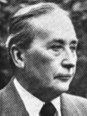

Willem Elsschot (1882-1960)
(Alfons de Ridder)

Biografie :
Na de Antwerpse gemeenteschool in de Van Maerlandstraat, enkele jaren Koninklijk atheneum en enige baantjes als loopjongen liet de begaafde Alfons de Ridder zich als leerling inschrijven in het Hoger Handelsinstituut, dat hij na voleindigde studie in 1904 als licentiaat in handels- en consulaire wetenschappen verliet. Hij was daarna werkzaam op kantoren te Antwerpen, Parijs, Rotterdam (waar hij huwde met Jeannette Joséphine Scheurweghen uit Berchem) en Brussel.
Gedurende de eerste wereldoorlog werd hij secretaris van het Nationaal komiteit voor hulp en voeding te Antwerpen en, na een kort intermezzo als mededirecteur van een reclamefirma, begon hij voor eigen rekening in een publiciteitszaak die hij tot aan zijn dood leidde. (Zijn vrouw stierf nauwelijks een dag na haar echtgenoot.)
Werd de belangstelling voor de literatuur bij Alfons de Ridder reeds gewekt op het Antwerps atheneum (zijn leraar Nederlands was dichter Pol de Mont), de schrijversloopbaan van Elsschot begon pas echt te Rotterdam, waar hij gedichten en de roman Villa des Roses schreef. Als pseudoniem koos hij de naam Elsschot (de bossen tussen Westerlo en Veerle).
Met Lijmen publiceerde hij zijn eerste belangrijke roman. Daarin treden voor het eerst de twee figuren op die in al zijn overige werk zullen voorkomen. Frans Laarmans, de schuchtere idealist en dichterlijke gevoelsmens, en Boorman, het type van de keiharde zakenman en geraffineerde moneymaker.
Ofschoon er in beide figuren zeker een ontwikkeling is waar te nemen, blijven zij elkanders antipode. Bijna tien jaar na Lijmen schreef Elsschot, op aansporing van zijn vriend, Jan Greshoff, zijn meesterwerk Kaas, dat hem de literaire roem schonk die hem tot dan toe onthouden was. Zijn later werk stond op hetzelfde hoge peil.
Bibliografie :
- Verzameld werk (1957) `complete works'
- Zwijgen kan niet verbeterd worden; ongebundelde teksten (A. Kets-Vree 1979)
- Brieven (Vic van de Reijt 1993) `letters'
- Villa des Roses (Rotterdam 1910)
- Dedicated to Mej. Anna Christina van der Tak - Een ontgoocheling (Antwerpen 1914)
- De verlossing (Antwerpen 1921)
- Lijmen/Het been:
-
- Lijmen (Antwerpen 1923)
- Het been (Antwerpen 1938)
- Dedicated to Menno ter Braak
- Kaas (Antwerpen 1933)
- Dedicated to Jan Greshoff - Tsjip/De leeuwentemmer:
-
- Tsjip (Antwerpen 1934)
- Dedicated to Jan Maniewski - De leeuwentemmer (Antwerpen 1939)
- Pensioen (Antwerpen 1937)
- Dedicated to Jeannetta Jozefina Scheurwegen - Het tankschip (Antwerpen 1941)
- Dedicated to Herman Molitor - Het dwaallicht (Antwerpen 1946)
- Dedicated to Paul en Jan Veen
- Not in Verzameld werk
-
- Brief aan Walter (Brief aan mijn zoon)
- De Juweelenstoet (1923)
- Het diamant (1924)
- Drama in vier bedrijven - in de kleine Snoeck's almanak 1943 with the pseudonym Nicodemus (Also in Snoeck's 83)
- De bekering van Viaene - in de grote Snoeck's almanak 1943 with the pseudonym Nicodemus.
Gedichten :
- De zee (Antwerpen 1902)
- Dedicated to Willem Kloos - Aan mijn moeder (Antwerpen 1902)
- Aan mijn moeder (Antwerpen 1904)
- Aan Fine (Antwerpen 1903)
- Moeder (Parijs 1907)
- De baggerman (Rotterdam 1908)
- Bij het doodsbed van een kind (Rotterdam 1908)
- Moeder (Rotterdam 1908)
- Tot den arme (Rotterdam 1909)
- De bedelaar (Rotterdam 1909)(The Overweight Beggar)
- Tot den arme (Rotterdam 1910)
- De klacht van den oude (Rotterdam 1910)
- De bult spreekt (Rotterdam 1910)
- Het huwelijk (Rotterdam 1910)
- O jeugd! (Antwerpen 1933)( O Youth!)
- Aan Jan Greshoff (Antwerpen 1933)
- The dedication in Kaas - Brief (Antwerpen 1934)
- Van der Lubbe (Antwerpen 1934)
- Dedicated to Simon Vestdijk - Spijt (Antwerpen 1934)
- Aan Willem Gijssels (Antwerpen 1940)
- De banneling (Antwerpen 1943)
- Dedicated to Mr. en Mevr. Jan Wilms
Borms (Antwerpen 1947)
|